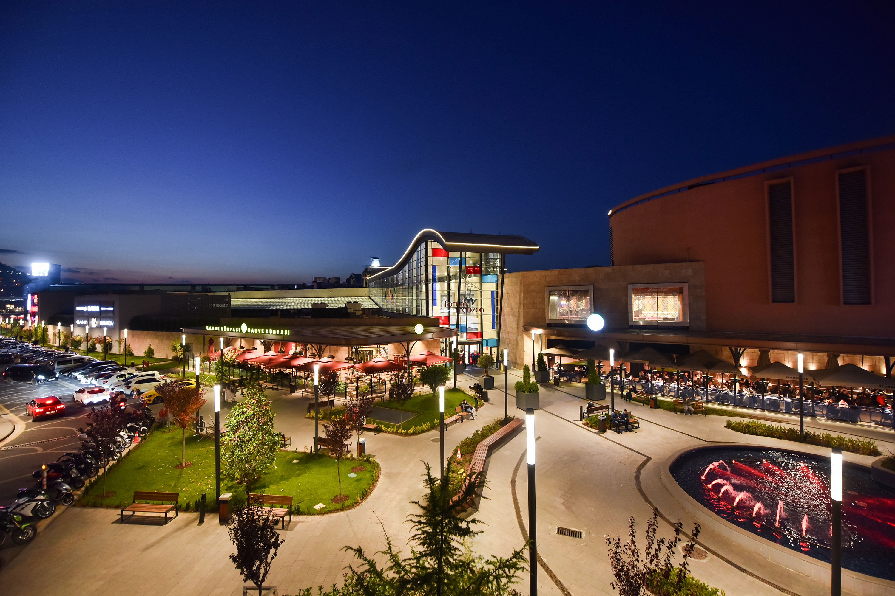
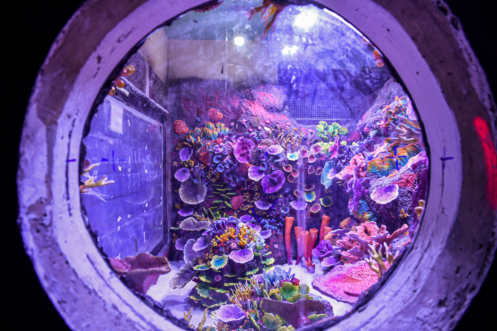
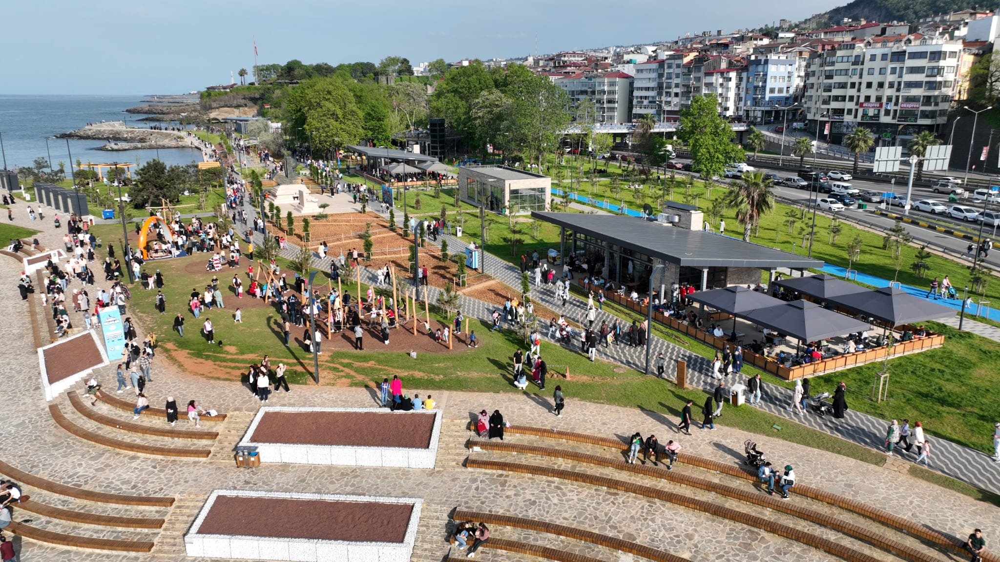
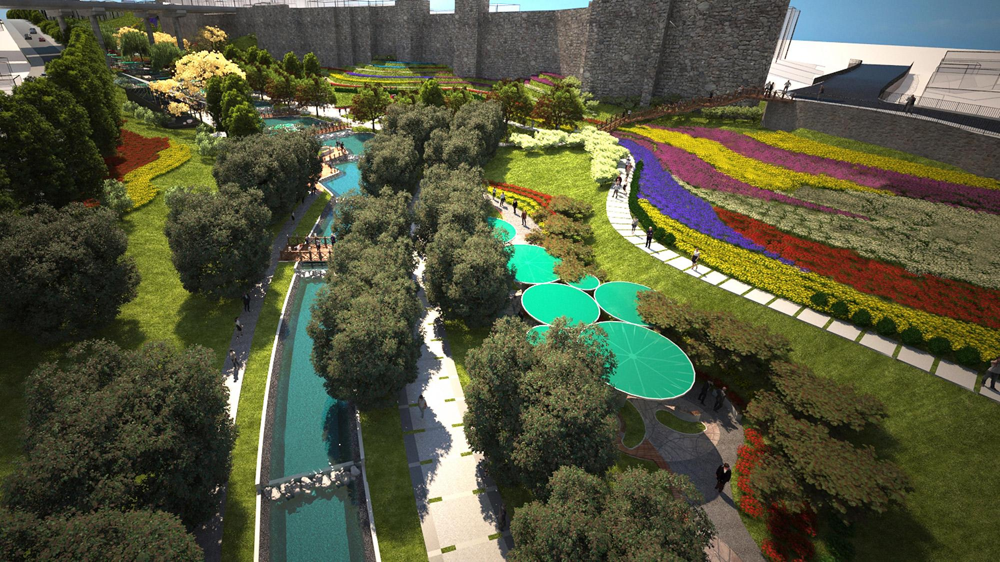

Trabzon’un en büyük alışveriş merkezi olan Forum AVM, sinema salonları, çocuk oyun alanları ve restoranlarıyla aileler için ideal bir mekândır.
Adres: Sanayi Mah. Devlet Sahil Yolu Cad. No:75, Trabzon
Aktiviteler: Sinema, alışveriş, çocuk eğlence merkezi
Giriş: Ücretsiz (Etkinliklere göre değişebilir)

Karadeniz’in ilk tünel akvaryumu olan Trabzon Akvaryum, çocuklar için eğitici ve eğlenceli bir deneyim sunar.
Adres: Beşirli Mah., Ortahisar/Trabzon
Aktiviteler: Deniz canlılarını yakından gözlemleme
Giriş: Ücretli

Yenilenen yürüyüş yolu, bisiklet parkuru, çay bahçeleri ve deniz manzarasıyla ailece huzurlu zaman geçirmek için ideal.
Konum: Ganita Mevkii, Trabzon
Aktiviteler: Yürüyüş, bisiklet, manzara keyfi
Giriş: Ücretsiz

Çocuk oyun alanları, spor sahaları ve geniş yeşil alanlarıyla aile piknikleri ve doğayla iç içe vakit geçirmek için harika bir yerdir.
Adres: Tabakhane Vadisi, Ortahisar/Trabzon
Aktiviteler: Piknik, çocuk oyun alanı, spor
Giriş: Ücretsiz